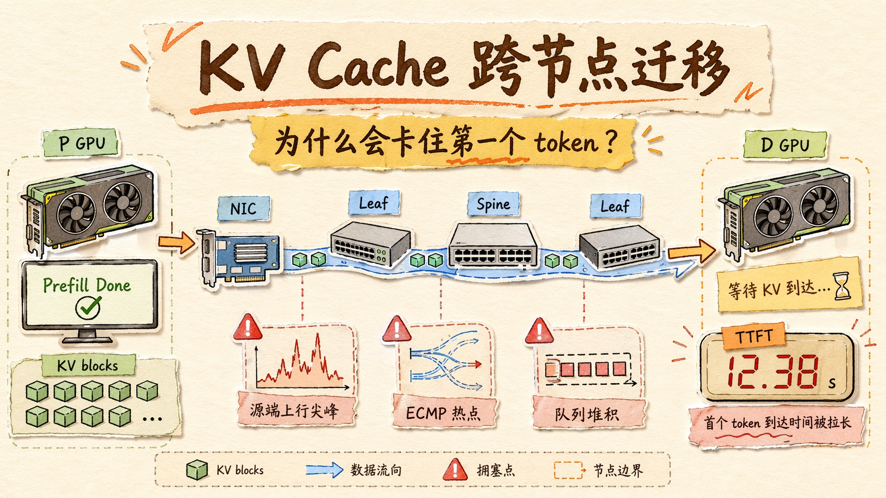
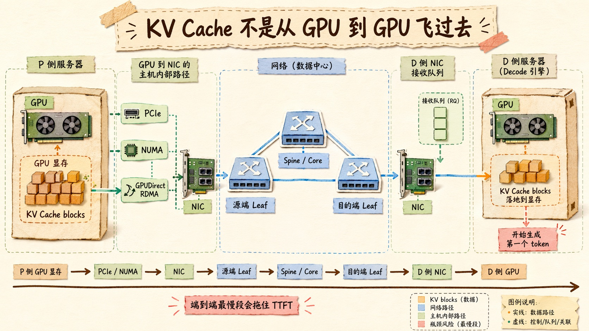
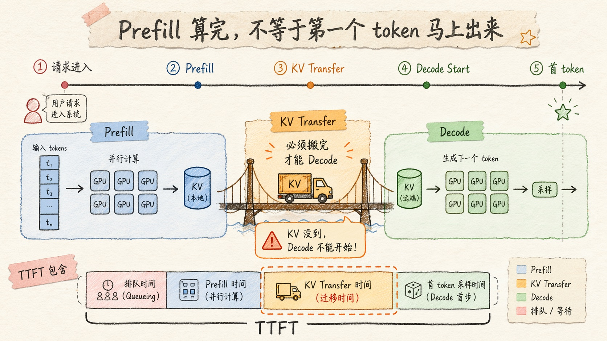
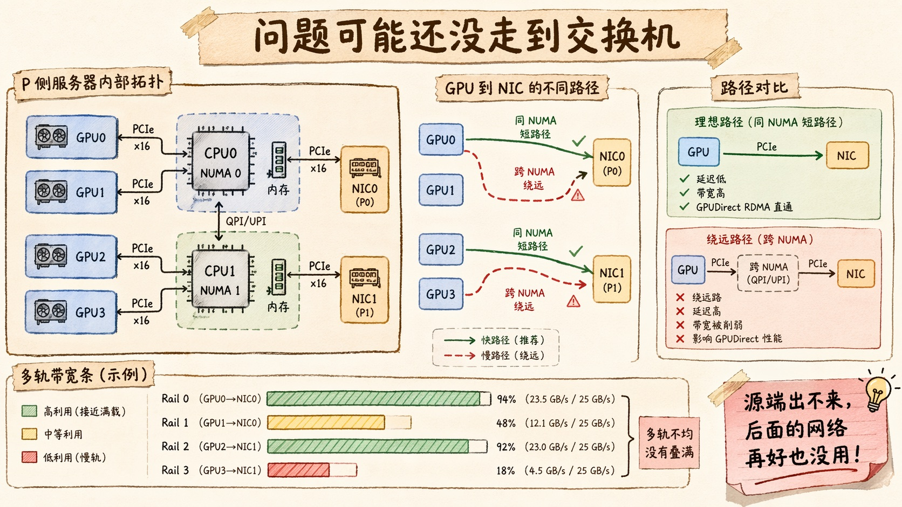
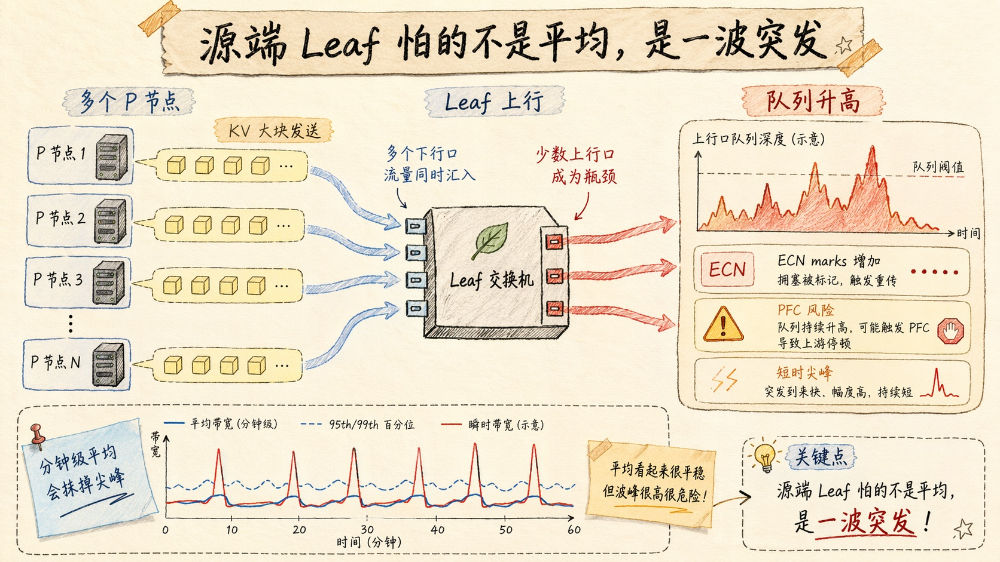
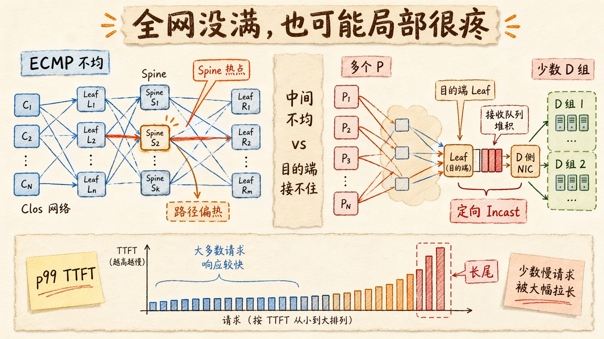

KV Cache 跨节点迁移，为什么会卡住第一个 token？
如果你做过一点大模型推理服务，很容易遇到一个很别扭的现象。
Prefill 看起来不慢。
Decode 看起来也不慢。
GPU 也不是完全不够。
但用户就是等不到第一个字。
更奇怪的是，你去看网络监控，平均带宽好像也没满。400G 的网卡没有打满，交换机总吞吐也不是特别夸张，整个集群看上去没有那种「全网爆炸」的感觉。
可 TTFT 就是下不来。
这时候很多人会本能地说一句，网络不够快。
这个判断不能说错。
但太粗了。
因为在分离式推理架构里，KV Cache 跨节点迁移从来不是一个简单的「从 A 机器传到 B 机器」问题。它更像一条很长的搬运链路，中间任何一段卡住，都会挡在第一个 token 前面。
你可以把它想成这样。
Prefill 已经把题目读完了，也把每一层的 Key、Value 都算出来了。
但 Decode 节点还没拿到这些 KV。
那它就不能开始生成。
所以这段迁移时间，直接算进 TTFT。
这就是它敏感的地方。
训练里的网络慢，很多时候拖的是吞吐。
KV Cache 迁移慢，拖的是用户眼前那几秒空白。

它不是 GPU 到 GPU 飞过去
先把画面拆开。
很多人脑子里会有一个很简化的想象：P 节点算完 Prefill，D 节点负责 Decode，中间把 KV Cache 搬过去。
听起来像 GPU 到 GPU 之间飞了一包数据。
真实路径要麻烦得多。
KV 最开始在 P 侧 GPU 显存里。要跨节点送出去，它要先走出 GPU，经过主机内部的 PCIe 拓扑，走到对应的 NIC。如果 GPUDirect RDMA 生效，它可以少走一些 CPU 中转；如果没走通，路径就会变长，延迟和 CPU 开销都可能上来。
然后它进入源端服务器所在的 Leaf 交换机。
如果 P 节点和 D 节点不在同一个 Leaf 下，它还要继续穿过 Spine，甚至更上层的 Core。等到了 D 侧 Leaf，再下发到目标服务器 NIC，最后落到 D 侧 GPU 或者推理引擎管理的接收缓冲里。
你看，光是这句话里，就已经有好几段可能出问题。
P 侧 GPU 到 NIC。
源端 Leaf 上行。
Spine / Core 路径。
目的端 Leaf 下行。
D 侧 NIC 到 GPU。
所以 KV Cache 跨节点迁移最容易被误判的地方就在这里：它看起来是网络问题，其实是端到端数据路径问题。
网络只是其中一段。
而 TTFT 只认最后结果。
哪一段最慢，它就被哪一段拖住。

为什么 Prefill 和 Decode 要分开
讲到这里，先补一点背景。
现在很多大模型推理系统会考虑 Prefill / Decode 分离。
原因也不复杂。
Prefill 和 Decode 的性格完全不一样。
Prefill 是把一大段输入 token 一次性吃进去。它更偏计算密集，batch 做大一点，GPU 更容易被喂饱。
Decode 是一个 token 一个 token 往外生成。每一步都要读历史 KV Cache，更偏显存带宽和调度。它的延迟敏感度也更高，因为用户正在看着字往外蹦。
如果把这两类负载粗暴混在一起，互相干扰很明显。
长 Prompt 的 Prefill 可能把 Decode 挤住。
大量 Decode 请求又会让 Prefill 很难组织成舒服的大 batch。
所以 DistServe、Mooncake 这类工作都会把问题往分离式推理上推：让 Prefill 和 Decode 使用不同的资源池，用更适合各自特性的方式调度。
这个思路很自然。
但它引入了一个新成本。
KV Cache 要搬家。
Prefill 节点算出来的 KV，Decode 节点要接着用。只要它们不在同一张卡、同一台机器，甚至不在同一个机架，迁移链路就成了第一个 token 前面的必经路。
这就是为什么 P/D 分离不是单纯的调度优化。
它还把推理系统里的网络问题，直接抬到了用户体验层。

第一段瓶颈：源端可能根本出不来
一说网络瓶颈，很多人会直接去看交换机。
但在 KV 迁移里，第一段问题经常还没走到交换机。
它卡在源端主机内部。
也就是 P 侧 GPU 到 NIC 这一段。
这段路听起来很短，但很容易不顺。
比如 GPU 和 NIC 不在同一个 NUMA 域。比如某张 GPU 到某张网卡的 PCIe 路径更绕。比如你以为 GPUDirect RDMA 生效了，实际上流量还是绕了 CPU 或者走了不理想的路径。再比如多网卡看起来都在用，但不同 rail 的实际吞吐差很多。
这时候你会看到一个很迷惑的现象。
交换机不热。
网络平均不高。
但某些 KV 迁移就是慢。
同一台服务器上，不同 GPU 发出去的速度还不一样。
这不一定是网络中间出了问题。
可能是源端「出门」这一步就不顺。
我一直觉得这类问题很像城市交通。你要从一个小区去机场，大家总盯着高速堵不堵，但你可能根本还没开上高速，先卡在小区门口那条窄路上。
KV 迁移也是一样。
P 侧 GPU 显存里的 KV，要先顺利走到 NIC。
如果这一步不稳，后面的 Clos 网络再漂亮，也救不了你的 TTFT。

第二段瓶颈：源端 Leaf 被一波波打高
如果源端主机路径没问题，下一个常见瓶颈就是源端 Leaf 上行。
这也是第一次真正进入「网络」的地方。
想象一下，一个 Leaf 下面挂了很多 P 节点。它们都在做 Prefill。某一小段时间里，一批请求陆续完成 Prefill，然后同时开始把 KV Cache 往外发。
这时候 Leaf 看到的不是平滑流量。
而是一波突发。
很多服务器下行口一起往有限的上行口推大块 KV 数据。单个流量看起来不一定离谱，但叠在同一个时间窗口里，队列就会上来。
队列一上来，ECN marks 可能增加。
再严重一点，PFC 风险也会上来。
问题就在这里。
KV Cache 迁移不像训练里的 collective 那么规律。训练通信虽然也重，但节奏更可预测，模式更稳定。KV 迁移是请求驱动的。用户请求什么时候来、Prompt 多长、Prefill 什么时候完成、要发给哪个 Decode 组，都带着很强的不确定性。
所以源端 Leaf 上行面对的不是一条稳定大河。
更像一阵阵突然冲下来的山洪。
平均看不吓人。
瞬间看很疼。
这也是为什么你不能只看分钟级平均带宽。分钟级平均把尖峰抹平以后，最关键的信息就没了。
TTFT 不会等你做平均。
它只会被那一次尖峰拖住。

第三段瓶颈：中间网络不是不够大，而是不够均
再往里走，就是 Spine / Core 这些中间网络。
这里当然也可能带宽不够。
但在很多真实系统里，更常见的问题不是「全网总带宽不够」，而是「某些路径比其他路径更热」。
这句话很重要。
因为大集群网络通常不是一条路，而是一组等价路径。Clos、ECMP、多 Spine，本来就是为了让流量可以摊开走。
但 KV 迁移流量不是完全随机的背景噪声。
它有方向。
一批 P 节点，可能集中把 KV 发给某几个 D 副本，或者某个 TP 组。某些哈希结果、某些目标组合、某些调度策略，会让一部分路径长期偏热。
于是你看全网平均，很健康。
你看某些 Spine 端口，很难受。
你看整体吞吐，没有跑满。
你看某些批次的 TTFT，长尾很明显。
这就是路径热点。
它最麻烦的地方是，问题不是每次都发生，也不是所有请求都慢。
有时候快。
有时候慢。
有些目标组快。
有些目标组慢。
这会让排查变得很折磨。因为它不像一根光纤断了那样干脆，也不像所有链路都满了那样明显。它更像系统里某些方向反复积压，最后表现成 TTFT 的尾延迟。
所以看中间网络，不能只问总量够不够。
还要问路径摊得均不均。
第四段瓶颈：目的端接不住，最容易被低估
真正容易被低估的，是目的端。
很多人天然觉得，发送端和中间网络更危险。
其实在 KV 迁移里，目的端很容易成为最尖锐的汇聚点。
原因很简单。
KV 不是均匀发给所有 Decode 节点。
它通常会发给某个目标 Decode 副本，或者某个 TP 组。
如果多个 P 节点在相近时间里完成 Prefill，而调度器又把它们的 KV 指向少数几个 D 目标，那接收侧就会出现非常典型的定向 Incast。
多个源头。
少数目标。
一瞬间打过来。
目的端会卡在哪？
第一层是 D 侧 Leaf 下行。
很多来自上游的流量，最后要汇到同一个机架、同一组服务器方向。
第二层是 D 侧 NIC。
尤其是多条 KV 流同时进入同一台服务器时，接收队列、DMA、内存路径都会变得敏感。
第三层是 D 侧 GPU 落地。
KV 接收以后不是凭空消失，它还要被放到推理引擎能用的位置，完成映射、组织、可能的 block 管理，然后 Decode 才能真正接上。
这里稍微不顺，TTFT 就继续等。
目的端问题最讨厌的地方，是它从全网视角看不一定显眼。
总流量不大。
平均带宽不高。
但某个 D 副本、某个 D 组、某个接收方向，压力很大。
于是你会看到一种长尾。
请求打到这个目标组，慢。
打到另一个目标组，正常。
系统整体看起来没炸，但用户侧 p99 很难看。
这就是目的端定向汇聚的典型味道。
所以 KV 迁移最容易被低估的一句话是：问题不一定是发不出去，也可能是集中接不住。

为什么平均带宽经常骗你
讲到这里，就能理解为什么平均带宽经常会误导人。
KV 迁移怕的不是平均。
它怕三个东西。
短时突发。
局部汇聚。
尾延迟。
平均带宽会把短时突发抹平。全网总吞吐会把局部热点藏起来。平均 TTFT 会把少数慢请求的痛感稀释掉。
但用户感知不是平均的。
用户感知的是这一次。
他发出请求以后，屏幕空白了多久。
所以看 KV Cache 迁移，真正要关心的不是「网络是不是总体没满」，而是：
P 侧 GPU 到 NIC 这段有没有慢轨。
源端 Leaf 上行有没有尖峰。
Spine / Core 路径有没有偏热。
D 侧 Leaf 下行有没有接收队列。
某些 Decode 副本是不是长期拖慢 TTFT。
这些指标如果只用平均值看，很容易看不到。
你得看峰值，看 p99，看单端口，看单路径，看单目标组。
这就像排队买咖啡。店里一天平均每分钟只来两个人，听起来很轻松。但如果早上 9 点 10 分突然来了 80 个人，用户体验就是崩的。
平均值没有撒谎。
只是它回答了一个不重要的问题。
ECN 和 DCQCN 为什么有时救不及时
RoCE 网络里，大家经常会提到 ECN、PFC、DCQCN。
这些机制当然重要。
但在 KV 迁移这种流量形态下，它们并不是万能按钮。
原因还是突发。
拥塞控制需要时间。
队列开始上升，交换机打 ECN 标记，接收端把拥塞信息反馈回去，发送端再调整速率。这个链路是有效的，但它不是瞬移。
而 KV 迁移的尖峰可能来得很快。
多个 Prefill 节点同时完成。
多条 KV 流同时打向同一个 D 组。
某个 Leaf 或某个接收端口短时间被推高。
等反馈链路开始发挥作用时，队列可能已经很深，甚至已经接近触发 PFC 的边界。
所以这里的难点不是「有没有拥塞反馈」。
而是「反馈够不够快，能不能在尖峰把队列打深之前把流量压住」。
这也是 KV 迁移比稳定大流更难控制的地方。
稳定大流可以慢慢收敛。
尖峰流量没有那么多耐心。
它几毫秒、几十毫秒里就把问题暴露出来，然后 TTFT 已经被拉长了。
真正该看的证据链
如果要判断 KV 迁移到底卡在哪，我会按端到端链路去看，而不是先给网络扣帽子。
先看源端主机。
GPU 和 NIC 的拓扑关系是否合理？跨 NUMA 有没有明显更慢？GPUDirect RDMA 是否真正走通？不同 GPU、不同 NIC、不同 rail 的迁移能力是不是一致？
如果这里不稳，问题可能还没出服务器。
再看源端 Leaf。
P 侧接入交换机上行有没有短时冲高？ECN marks 是不是集中出现在源端上行？多个 P 节点是不是在相近窗口同时发 KV？
如果这些成立，源端汇聚很可能就是第一波瓶颈。
然后看中间网络。
Spine / Core 有没有个别链路长期偏热？ECMP 有没有明显不均？慢请求是不是和某些路径、某些方向相关？
如果是，那就不是全网不够，而是路径不均。
再看目的端。
D 侧 Leaf 下行有没有队列？D 侧 NIC 接收有没有压力？某些 Decode 副本是不是长期更慢？TTFT 长尾是不是和特定目标组绑定？
如果请求打到某些 D 组就慢，那目的端定向 Incast 就要重点怀疑。
最后，把这些东西和应用层指标对上。
迁移时间。
TTFT p95 / p99。
不同 D 副本的首 token 延迟。
不同 P/D 组合的迁移耗时。
网络是过程。
TTFT 才是结果。
只看过程指标，很容易把一堆漂亮曲线解释成「没问题」。但用户等第一个字等得难受，这件事不会因为平均带宽漂亮就消失。
写在最后
KV Cache 跨节点迁移最重要的判断，其实就一句话：
不要把它当成传文件，要把它当成一条挡在首 token 前面的端到端数据路径。
这条路径上，源端要发得出来，中间要过得稳定，目的端要接得住。
三件事缺一个，TTFT 都会被拉长。
而且很多时候，真正的问题不是总带宽不够。
是某一段路径不顺。
是某一波突发太尖。
是某一个方向长期偏热。
是少数几个 D 目标接不住。
所以排 KV 迁移问题，最怕一句话：
网络平均没满，所以不是网络问题。
这句话听起来很理性。
但在 KV 迁移场景里，它经常把你带偏。
真正该问的是：
哪一段链路拖住了第一个 token？
这个问题问对了，后面的排查才会开始变得清楚。
参考资料
- DistServe: Disaggregating Prefill and Decoding for Goodput-optimized Large Language Model Serving
- Mooncake: A KVCache-centric Disaggregated Architecture for LLM Serving
- LMCache: Efficient KV Cache Management for LLM Serving
- NVIDIA GPUDirect RDMA Documentation
- Microsoft DCQCN: Congestion Control for Large-Scale RDMA Deployments